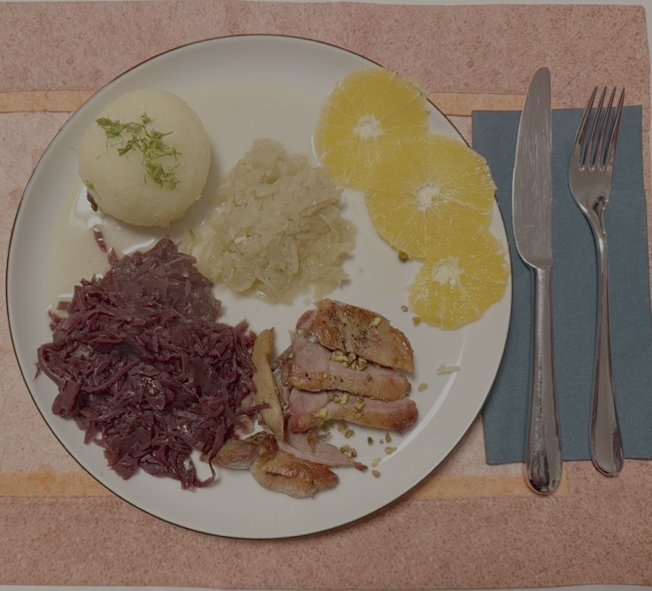

My special duck dish
It is about how to cook an awesome duck with fennel and other assortments.
The most important thing is to get the fresh material like, fennel, orange, a nice piece of duck meet.
Also the preparation of the Knoedel is not easy if you want to make it fresh.